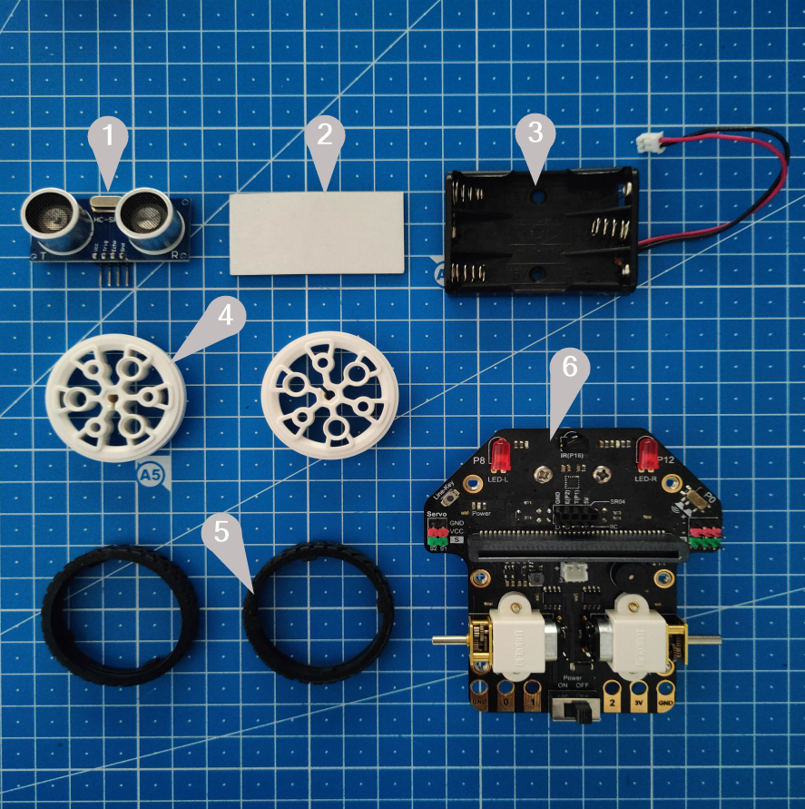
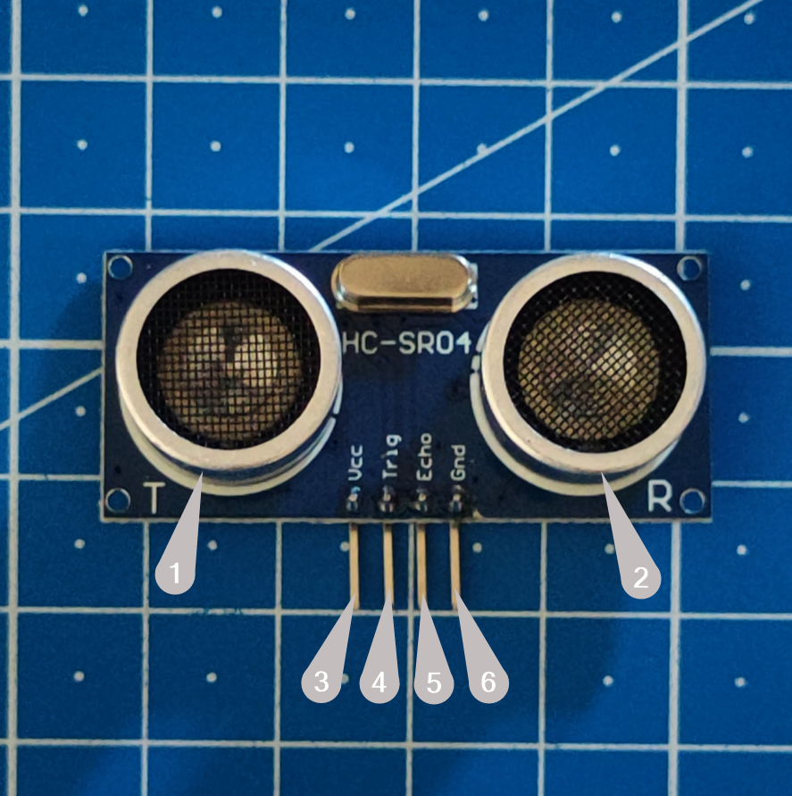
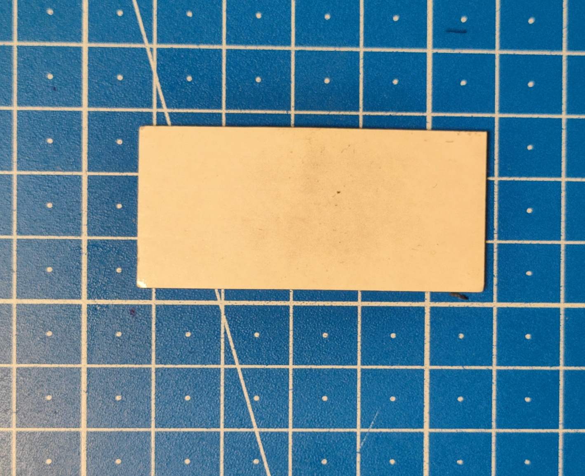
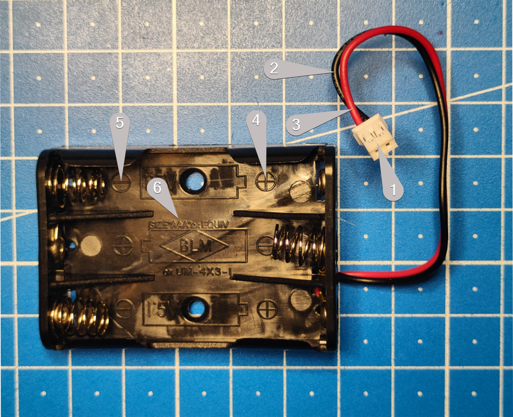
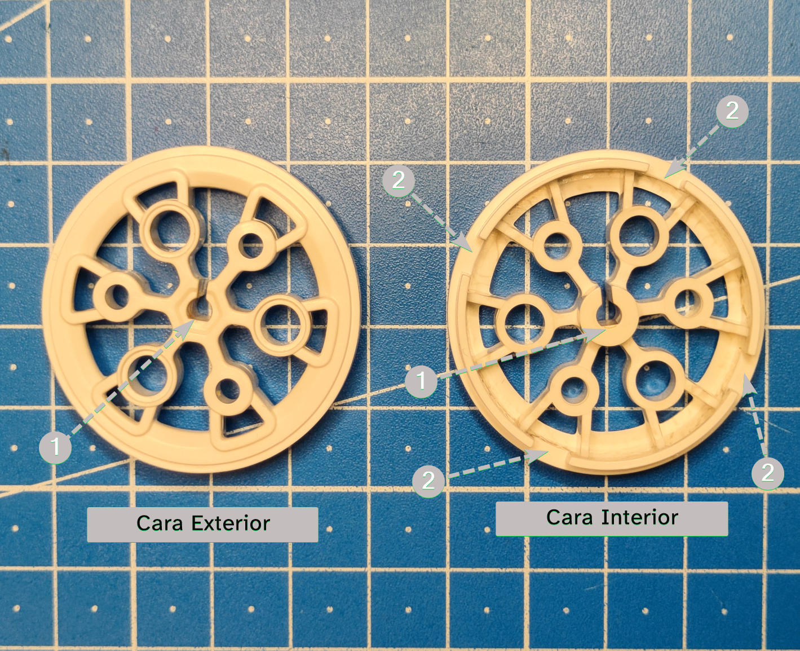
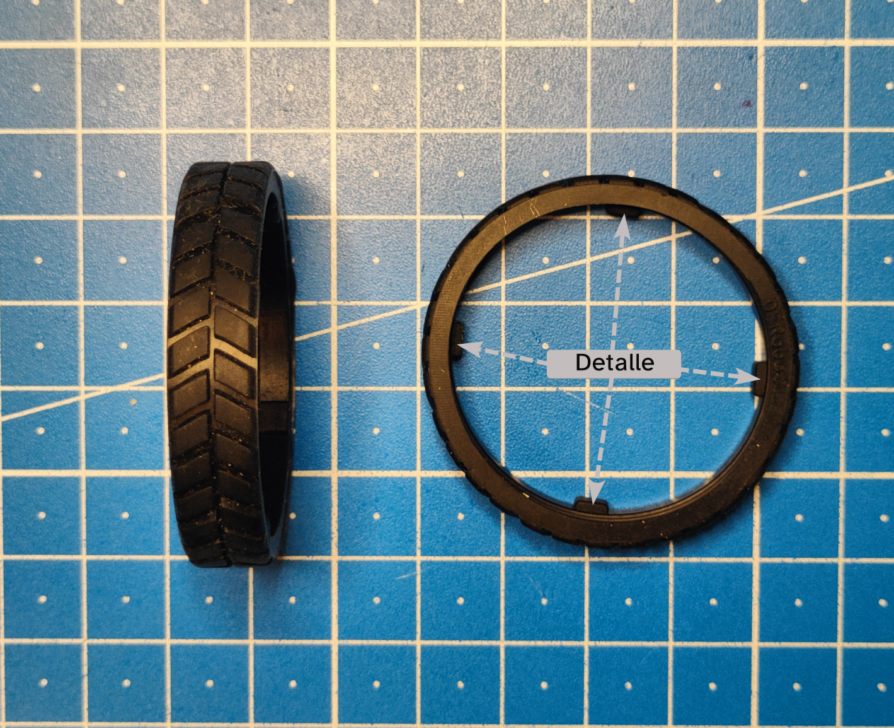
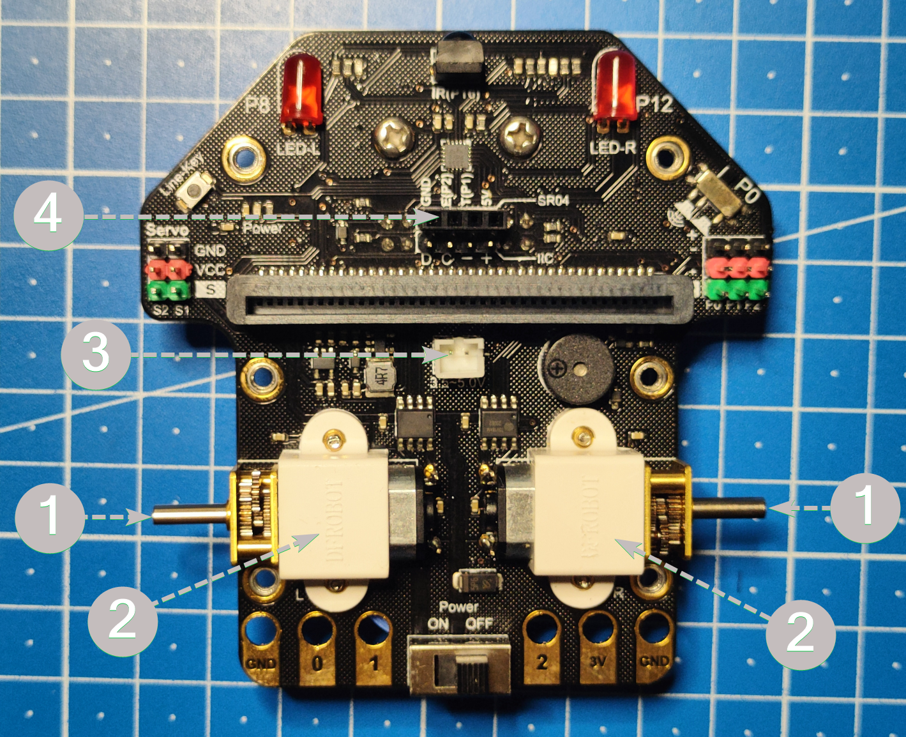
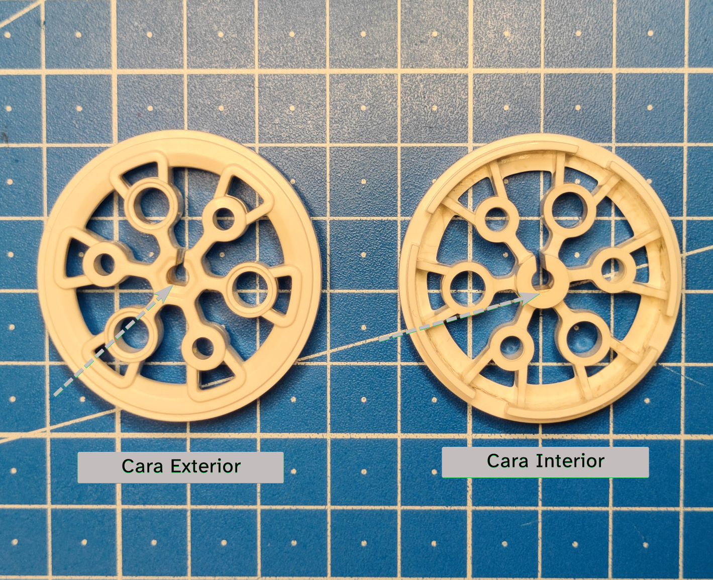

¿Qué os parece conocer todas las partes que forman nuestro robot?
Si vamos a trabajar con él, sería interesante conocer a fondo los detalles de todas las partes que lo forman. Quién sabe, quizás en algún momento debas montarlo, por eso os propongo esta actividad.
Vuestro profesora o profesor os proporcionará un robot Maqueen totalmente desmontado. Os váis a convertir en mecánicos Maqueen. Para que el éxito esté asegurado os propongo que trabajéis en grupo.
Antes de empezar a ensamblar, es importante conocer un poco mejor todas los elementos que forman el Maqueen.
Conjunto de piezas
En la siguiente imagen podéis ver todas las partes que forman nuestro Maqueen:

Las piezas numeradas se llaman:
- Sensor ultrasónico o de ultrasonicos.
- Material adhesivo de doble cara.
- Portapilas para tres pilas tipo AAA.
- Dos llantas.
- Dos bandas de rodadura.
- La placa del robot.
En las siguientes pestañas podéis aprender más sobre cada una de ellas.
1. Sensor ultrasónico
Este sensor os va a permitir medir la distancia a la que se encuentra un objeto que esté delante del robot.
Vamos a verlo con más detalle. Fijaos en la siguiene imagen:

A continuación vamos a describir todas sus partes:
- Es el transmisor y viene representado por la letra T. Su misión es emitir impulsos.
- Es el receptor, viene indicado con la letra R. Recibe los ecos.
- Patilla Vcc, se conecta a 5v.
- Patilla Trig. Representa el trigger o disparo del ultrasonido.
- Patilla Echo. Recepción del ultrasonido.
- Patilla Gnd, se conecta al negativo.
2. Material adhesivo
Este material tiene ambas caras adhesivas e irá colocado sobre la superficie de los motores. A continuación se muestra una imagen:

En el caso de tener que montar este elemento actuaremos como sigue:
- Retiramos la lámina de protección de una de las caras.
- Colocamos sobre los motores.
- La otra lámina de protección se retira cuando vayamos a instalar el portapilas.
3. Portapilas
Gracias a este elemento podremos suministrar la energía eléctrica a la placa del Maqueen.
Si os fijáis en la siguiente imagen, se destacan algunas partes importantes:

Para verla más grande, haz clic sobre ella
A continuación, os cuento más cosas sobre este elemento:
- Conector de alimentación, sólo tiene una posición.
- Cable negro, representa el negativo de la alimentación.
- Cable rojo, representa el positivo.
- Valor positivo de la pila (+). Al colocar las pilas debéis fijaros en este detalle.
- Valor negativo de la pila (-).
- Tipo de pilas AAA.
4. Llantas
Las llantas junto con las bandas de rodadura forman las ruedas de nuestro robot.
En la siguiente imagen podéis ver los detalles de las llantas:

Ahora os explico todo un poco mejor:
- En la imagen podéis ver la llanta en su cara exterior y en su cara interior. Esto se refiere a cómo deben quedar una vez montadas en el robot.
- Ahora vamos a ver los detalles que están numerados:
- Detalle 1: Por aquí se introduce el eje de la placa. Es muy importante que os fijéis que tiene una zona plana que conincidirá con el elemento que se introduce.
- Detalle 2: Al colorcar las bandas de rodadura debéis tener en cuenta estos huecos.
5. Bandas de rodadura
Aunque a simple vista os pueda parecer un elemento muy simple, recordad que son los elementos que están en contacto con la superficie y pemiten que el robot se desplace con seguridad. Por lo tanto deben mantenerse limpias y en perfecto estado.
En la siguiente imagen os muestro cómo son:

En la imagen anterior habéis observado que se ha resaltado un detalle. A continuación vamos a hablar de él:
- Detalle: si os fijáis bien, podéis apreciar que hay cuatro pestañas que sobresalen. Estas pestañas deben encajar perfectamente en los huecos que hay en las llantas.
6. La placa
La placa es la parte más importante del Maqueen, y sobre ella ensamblaremos los demás elementos.
En la siguiente imagen podéis ver la placa por su cara superior. Además, se ha señalado con números (1, 2, 3 y 4) dónde irán colocados el resto de elementos.

El montaje es muy sencillo, los números de la imagen anterior os indican las zonas de ensamblaje. A continuación tenéis todos los detalles:
- Eje del motor, hay uno a la izquierda y otro a la derecha. Aquí irán colocadas las ruedas. Es importante que os fijéis que este elemento tiene una parte plana. Si no lo hacéis bien, la rueda no entrará.
- Parte superior de los motores. Aquí se colocará el material adhesivo.
- Conector de alimentación. Aquí debes conectar el cable del portapilas. Importante, sólo tiene una posición.
- Conector para el sensor de ultrasonidos. Recuerda que debe colocarse mirando hacia adelante.
Ahora ya conocéis todos los elementos de vuestro robot Maqueen.
Vuestro profesor o profesora os deberá facilitar el Maqueen desmontado para que seáis vosotros los auténticos "mecánicos y mecánicas" de robots.
Es el momento de empezar a montarlo.
En el siguiente botón tenéis las instrucciones técnicas del montaje del Maquen:

Definición:
Plural de llanta. Es una pieza, generalmente de metal, de forma circular sobre la que se monta el neumático.
Ejemplo:
Los coches, las motos e incluso tu bici dispone de ellas.
Ejemplo:
Parte exterior de la rueda que está en contacto con el suelo. Están fabricadas de un plástico especial que favorecen el agarre a la superficie.
Ejemplo:
Las ruedas del robot Maqueen llevan bandas de rodadura para evitar que puedan patinar.

Ejemplo:
El eje es una línea que atraviesa un cuerpo. El cuerpo gira alrededor del eje.
Ejemplo:
El eje de la Tierra está inclinado.
Definición:
Es una onda cuya frecuencia es de un valor muy elevado, el ser humano no puede oírlos.
Ejemplo:
Los murciélagos usan estos sonidos para evitar chocar con los objetos.
 En este apartado conoceréis el robot con que vais a realizar vuestro trabajo final.
En este apartado conoceréis el robot con que vais a realizar vuestro trabajo final.